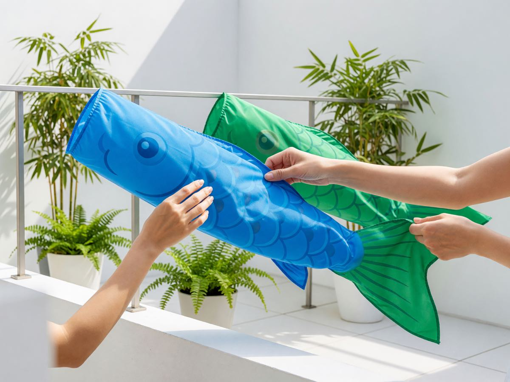
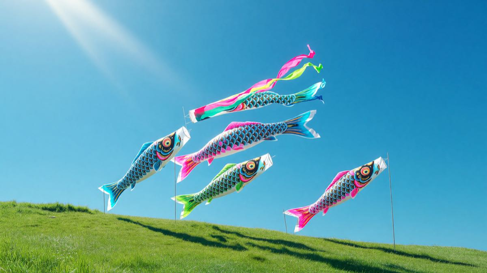
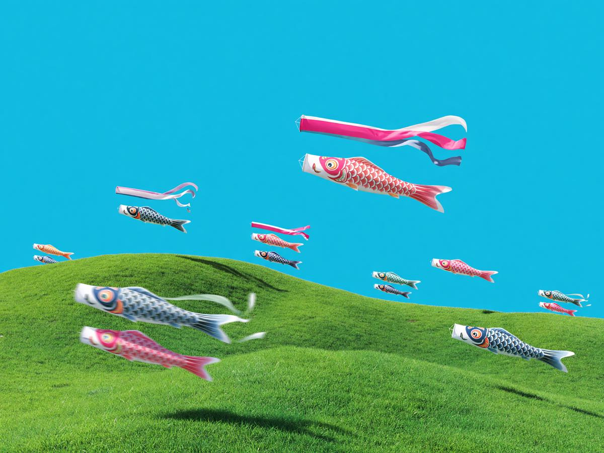

Coordination
Household display planner
Assign poles, track streamer colors per child, and share the setup checklist with grandparents across three time zones.

Kodomo no Hi · May 5
Kazeiro coordinates your family's koinobori display — wind forecasts, pole schedules, and tradition logs in one grown-up planning surface.
Built for families

Assign poles, track streamer colors per child, and share the setup checklist with grandparents across three time zones.

Real-time gust maps tell you when to raise, lower, or reinforce — so your koinobori fly full without tearing.
Tradition archive
Photo journals, voice memos from obaasan, and the exact knot technique your father taught you — logged against each May 5 and searchable forever.
Join families across Japan and the diaspora planning this year's rise.